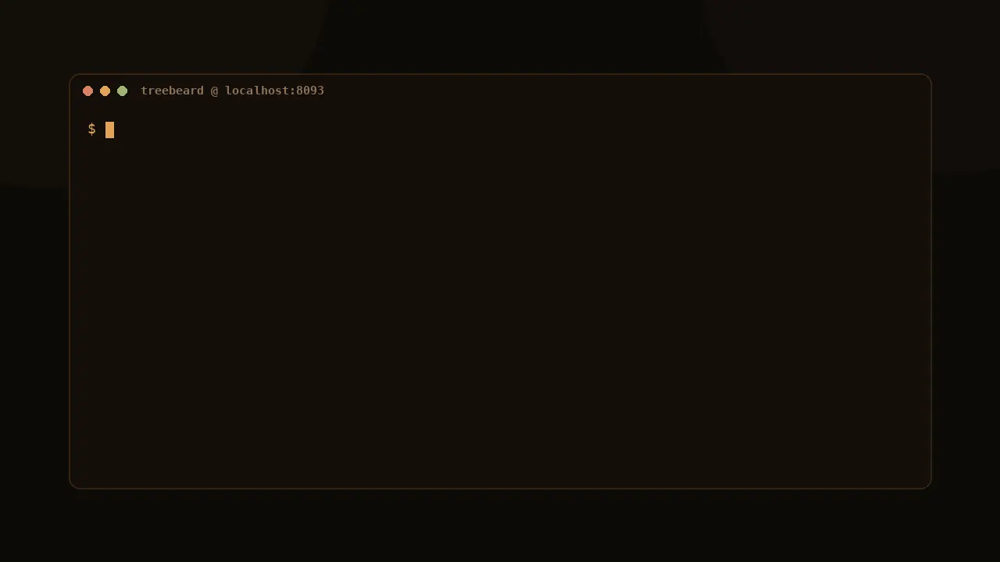

Treebeard runs Qwen3.6-35B-A3B — a fast mixture-of-experts model — on hardware you own, with a tree-structured memory built for agents: fork conversations into waves, pick the best branch, and keep a receipt for every decision. One command installs the model, the runtime, and a 94/100-verified OpenAI-compatible server.

Every claim below is behind a preregistered gate with saved, checksum-pinned evidence — not a vibe.
Wave search forks a conversation into sibling branches and commits the self-consistent winner. Not best-of-N luck — structured search over your own model's candidates.
Best-of-N improves answers but costs N×. Treebeard's StateTree lets the branches share their prompt prefix, so search is nearly free — and many agents fit on one card.
Every branch, winner-commit, and abort issues a
pcbt.receipt.v1 receipt with attribution and evidence
binding. Deterministic runs reproduce exactly across platforms.
Agent work is branchy: plans, retries, parallel hypotheses. Treebeard's runtime treats conversation state as a tree instead of a single ever-growing tape.
Sequence-ragged KV attention plus state-I/O fusion: forks share their prefix cells instead of copying them, and branches decode against the shared trunk. Shipped in the RC5–RC8 runtime line.
Fan a prompt out into a wave of forked siblings, decode each, score by verifier or self-consistency, commit the winner. The prefix is paid once; the search dividend is measured per gate.
The branch lifecycle is a transaction surface: client-driven
attribution, evidence binding, atomic winner commit, abort and
expiry — every transition receipted and counted in /metrics.
69 deterministic agent scenarios, one server slot, 262,144-token context, temperature 0, seed 42 — reproduced exactly (score and verdict vector) on Intel Arc Pro B70 and NVIDIA GB10.
Machine-readable evidence: result.json · summary.json · nvidia-result.json · nvidia-summary.json · full results index
| Measurement | Platform | Result |
|---|---|---|
| Native pp4096 | NVIDIA GB10 | 2,026.9 tok/s |
| Native tg128 | NVIDIA GB10 | 52.5 tok/s |
| Q8_0 direct 12-column speedup | NVIDIA Blackwell | 33.0% |
| Q8_0 MoE down speedup | NVIDIA Blackwell | 3.4% |
| 12-slot aggregate serving | Intel Arc Pro B70 | 194.023 tok/s |
| Fragmented multi-branch composition | Intel Arc Pro B70 (StateTree) | +73.4% |
| Dense golden 12-agent p50 | Intel Arc Pro B70 (StateTree) | +19.16% |
| Installed-package chat smoke | AMD Ryzen 9 5950X (portable CPU) | 9.30 tok/s |
pcbt.receipt.v1, /transactions).TREEBEARD_REASONING=off|bounded|unrestricted — thinking off by default (matches the 94/100 run); bounded budgets of 64 tokens (GPU) / 16 (CPU), overridable per request.TREEBEARD_SPECULATION=off|ngram|mtp|hybrid — opt-in drafting with Qwen3.6's native MTP head; not yet claimed as a speedup.About 26.7 GB, resumable, every byte SHA-256 verified. Needs roughly 32 GB of system or unified memory. Add --multimodal for the 0.9 GB vision projector.
curl -fsSL https://raw.githubusercontent.com/newjordan/treebeard/main/install.sh | bash
Downloads the model and the right runtime for your host — Intel SYCL, NVIDIA CUDA, or portable CPU.
treebeard doctor
Shows the platform selection and the exact launch command before anything starts.
treebeard serve
OpenAI-compatible API on http://127.0.0.1:8093/v1 — point your agent framework at it.